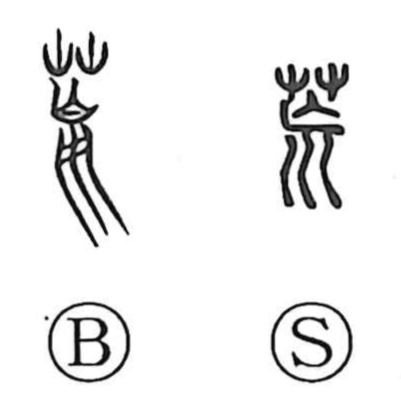

荒

Uncategorized
Kun: arai, areru, arasu, susamu | On: kou
wild ・ rough ・ desolate ・ barren ・ to lay waste
Explanation
A phono-semantic character: with the grass radical above and, below, an ancient form depicting a corpse whose hair still clings to the skull, it evokes bodies cast out into the weeds—an image of famine, desolation, and want. From this core sense come compounds like 荒野 (koya, “wilderness”), the plain where such bones lie, and 荒誕 or 荒唐 for things so out of joint that order has collapsed. The verb meanings extend naturally from the scene: to grow rough or wild, to become unfruitful or barren, to harm or lay waste, and even, by extension, to speak falsely.